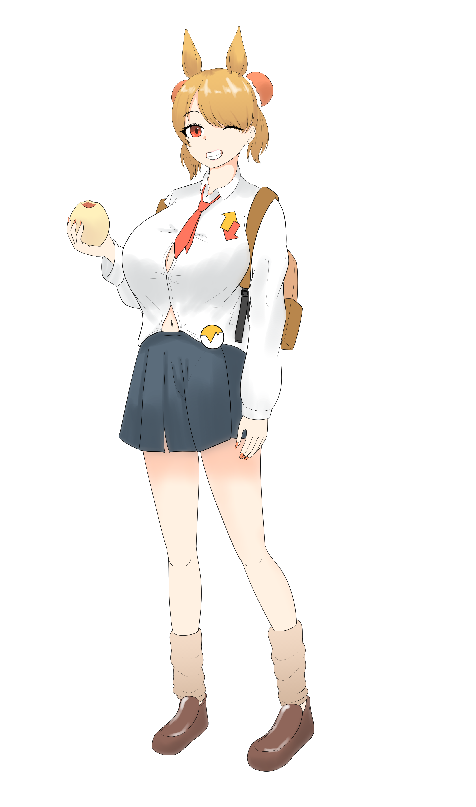

声調
SR
ポジション：中衛
役割：アタッカー
ステータス
| HP | 2000 |
|---|---|
| 攻撃 | 500 |
| 防御 | 300 |
スキル
ノーマルスキル
パッシブスキル
必殺スキル
ノーマルスキル：軽声
敵1人に対して攻撃力の70%×2のダメージを与え、10秒間相手の防御力を18%ダウン（CT 24秒）
パッシブスキル：五度法
戦闘可能な味方の人数に応じて戦闘可能な味方全員の会心率が5%から25%の範囲で増加。人数が少ないほど上昇。
必殺スキル：超上昇掌底
敵1体に対して攻撃力の430%分のダメージを与え、2.7秒間スタンさせる。
性能解説
音韻属性の単体アタッカー。
ノーマルスキルも必殺スキルも単体攻撃+デバフの組み合わせとなっており、パッシブスキルで味方の会心率を上昇させられる。
ノーマルスキルで防御力を下げたタイミングで必殺スキルでスタンさせ、動けない間に味方全員で会心攻撃を叩き込むのが基本的な活用法。
バフとデバフを兼ね備えたスキル構成の代償に素のスペックはアタッカーにしては控えめ。
小ネタ
小ネタを書く